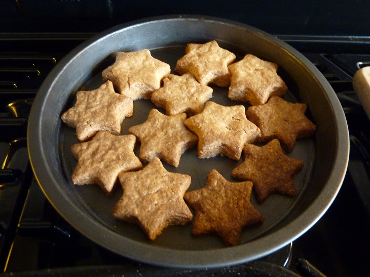
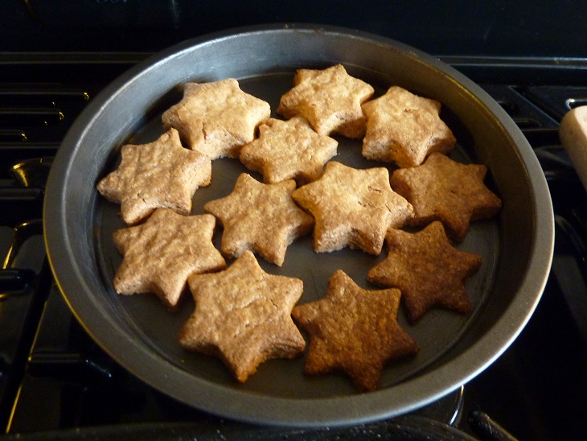

Le 16 Janvier 2014
Départ de Paris Charles de Gaulle pour Stafford!!
Après vérification des derniers petits détails nous nous retrouvons pour partir ensemble à l'aéroport.
Les sacs sont pleins à craquer: ils pèsent un peu plus de 23kg mais bon tout rentre! Il est maintenant temps de partir. Arrivé à l'aéroport tout se déroule bien. Premier vol pour Mélanie donc un peu de stresse mais tout s'est bien passé: nous avons eu le droit à une petite collation et à une boisson rafraichissante pour notre déjeuner c'est à dire un paquet apéro et une mini canette de coca (vous vous doutez bien qu'on avait encore faim...). Arrivé à Birmingham à 13h (heure locale) nous retrouvons un ami qui a accepté de nous emmener à l'université de Stafford en voiture!
Arrivé à Stafford à 15h, nous sommes accueillis et on nous demande d'attendre l'arrivée des familles qui allaient nous héberger. La personne s'occupant de Stéphane étant malade, il a du attendre qu'une autre personne l'accompagne jusqu'à la maison où il allait vivre pendant 3 mois.
Finallement nous sommes bien arrivés à bon port et avons bien été accueillis.


 
